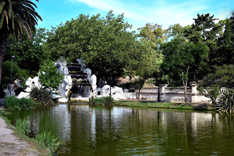
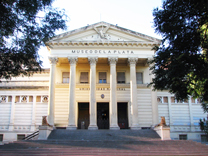
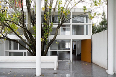
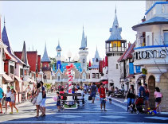
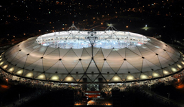

Llega el receso y con él, la oportunidad de tomar contacto con la
cultura y los lugares emblemáticos de la ciudad mediante actividades
variadas, económicas y divertidas para grandes y chicos.
Te proponemos un recorrido de 5 paradas, en El Bosque de La Plata.
Ver los lugares
-
paseo del bosque
Es el mayor espacio verde de la ciudad y fue fundado el 5 de junio de 1882, cuatro meses antes de la fundación de la ciudad. "El Bosque" está situado entre las calles 50, 60, 115 y 122 y tiene una extensión aproximada de 60 hectáreas. Su forestación es muy variada y cuenta con más de cien especies diferentes de árboles, entre los cuales se pueden divisar álamos, robles, ombúes y eucaliptos.
El Paseo del Bosque alberga muchas actividades de entretenimiento, como también culturales y científicas como el Museo de Ciencias Naturales. También se encuentran el Jardín Zoológico y Botánico, Observatorio astronómico, Planetario, Teatro del Lago “Martín Fierro”, Hipódromo, Casa Ecológica, Jardín de la paz, Gruta y lago y los estadios de Gimnasia y Estudiantes.
-
museo de ciencias naturales
Una de las atracciones dentro del Bosque. El Museo de Ciencias Naturales de La Plata es el más grande en su tu tipo de Latinoamérica y está entre los más completos del mundo.
Tiene como misión resguardar colecciones de Argentina y América del Sur y difundirlas a través de la exhibición y extensión educativa, en un marco de integración y respeto por el patrimonio natural y la diversidad de los pueblos. Además, se puede encontrar una sala con elementos del antiguo Egipto.
Su exhibición permanente está organizada en veinte salas, a través de las cuales los visitantes pueden transitar la historia desde el origen del Universo hasta el hombre.
-
El planetario
El PCLP se encuentra entre los más modernos de Latinoamérica. Bajo su domo (pantalla de proyección), de 17 metros de diámetro, las proyecciones digitales con resolución 4K transmiten a sus 175 espectadores una increíble sensación inmersiva, convirtiéndolo en un verdadero y maravilloso teatro de ciencias, arte y tecnología.
En estas vacaciones de invierno, recibe a niños y adolescentes de todos los niveles escolares, como así también al público en general durante los fines de semana y feriados. Ofrece funciones para todas las edades, visitas guiadas, ciclos de charlas, y observaciones astronómicas.

-
Estadio uno
El Estadio Jorge Luis Hirschi —denominado oficialmente Estadio UNO Jorge Luis Hirschi— es la cancha perteneciente al Club Estudiantes de La Plata. Está ubicada en la avenida 1 entre 55 y 57, en la ciudad de La Plata, Argentina, y cuenta con capacidad para albergar a 32.530 espectadores, lo que la convierte en el recinto deportivo no gubernamental de mayor aforo de la región.
Uno es el primer estadio 100% digital del país, y uno de los estadios de fútbol más modernos a nivel mundial, con características únicas en el fútbol argentino, como innovaciones tecnológicas y sustentabilidad ambiental.
Ofrece tours, donde se puede visitar su Museo Interactivo, que cuenta con tecnología de última generación de realidad virtual. Con experiencias como el Banco de Suplentes, Tribuna 4D y penales virtuales.
La gran estrella de este espacio es una pelota gigante en la que uno se mete literalmente. En realidad virtual, uno está dentro de la número cinco mientras se juega un partido, con altos y bajos, sentís cuando volás, cuando te patean y cuando tocás la red, con efectos especiales de última generación.

-
La casa Curutchet
La Casa Curutchet, la joya de La Plata que es Patrimonio de la Humanidad, está ubicada en Bulevar 53 nº 320. Es una de las magníficas obras del suizo Le Corbusier, y la única de su tipo en Latinoamérica. Para los amantes de la arquitectura, esta es una parada obligatoria.
La casa tiene su atractivo intacto y continúa convocando multitudes de curiosos. Se puede visitar de martes a viernes de 10 a 17 hs., y sábados y domingos, de 13 a 17 hs.
-
ciudad de los niños
Una ciudad en miniatura, un aeropuerto y navegar en un lago con puerto propio, son solo algunas de las cosas que hacen única a La Repu, el primer parque temático educativo de América Latina, donde podés aprender derechos y obligaciones cívicas en la zona de edificios públicos a escala infantil, realizar actividades agropecuarias en la granja educativa, subir a los juegos mecánicos, o simplemente montar al tren de madera y recorrer todo el predio en un viaje inolvidable.
El parque ofrece además una copiosa extensión de espacios verdes para la práctica de actividades recreativas y deportivas, y cuenta con una zona gastronómica con propuestas variadas y locales temáticos.
-
estadio único
El estadio único tiene una capacidad para 40.000 espectadores sentados, 13.000 parados y 357 localidades para personas con discapacidad motriz. Su estructura principal fue inaugurada el 7 de junio de 2003. La iluminación es suministrada por 220 artefactos que brindan una potencia de 2400 lux, compatibles con la televisión de alta definición (HDTV). El campo de juego de 105 por 70, metros te espera para que lo visites.